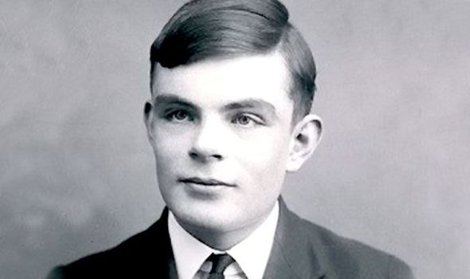
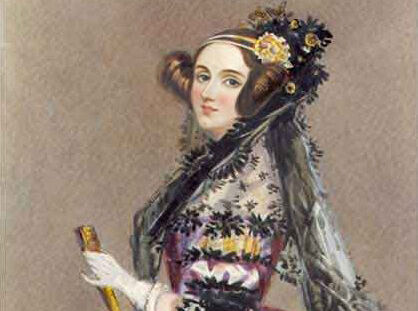
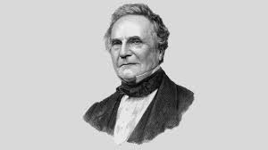

Charles Babbage foi um matemático, filósofo e inventor inglês nascido em 1791. Ele é conhecido como o pai do computador, pois foi o primeiro a idealizar máquinas capazes de realizar cálculos automaticamente. Entre suas principais criações está o projeto da Máquina Diferencial, que tinha o objetivo de calcular tabelas matemáticas com maior precisão.
Sua invenção mais famosa foi a Máquina Analítica, considerada o primeiro projeto de um computador programável. Essa máquina teria componentes semelhantes aos computadores atuais, como memória, unidade de processamento e entrada de dados por cartões perfurados. Embora nunca tenha sido completamente construída na época, suas ideias foram fundamentais para o desenvolvimento da computação moderna.
Próximo
Ada Lovelace nasceu em 1815, na Inglaterra, e foi uma matemática que trabalhou ao lado de Charles Babbage no estudo da Máquina Analítica. Ela ficou conhecida por escrever um conjunto de anotações explicando como a máquina poderia realizar diferentes cálculos seguindo instruções organizadas.
Por causa desse trabalho, Ada Lovelace é considerada a primeira programadora da história, pois criou o primeiro algoritmo destinado a ser executado por uma máquina. Além disso, ela teve uma visão muito avançada para sua época ao sugerir que computadores poderiam ser usados para criar música, imagens e outros tipos de conteúdo, não apenas para resolver cálculos matemáticos.
Voltar Próximo
Alan Turing foi um matemático e cientista da computação britânico nascido em 1912. Ele é considerado um dos principais fundadores da ciência da computação moderna. Uma de suas contribuições mais importantes foi a criação da Máquina de Turing, um modelo teórico que explica como os computadores podem processar informações e executar algoritmos.
Durante a Segunda Guerra Mundial, Turing trabalhou na quebra de códigos secretos da máquina criptográfica alemã chamada Enigma machine. Seu trabalho ajudou os Aliados a decifrar mensagens importantes, contribuindo para o avanço da guerra. Além disso, Turing também propôs o famoso Teste de Turing, um método usado para avaliar se uma máquina pode demonstrar comportamento inteligente semelhante ao de um ser humano.
Voltar